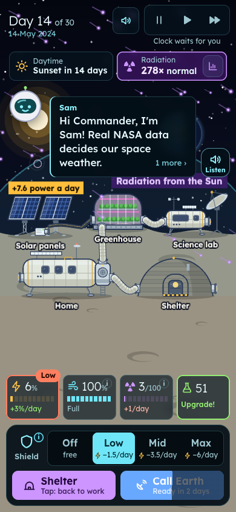
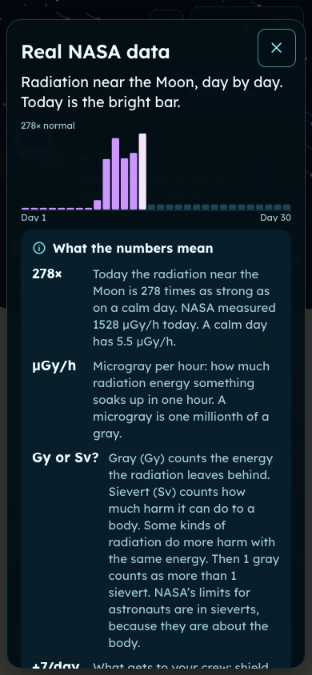

Moon Base Commander
One game for every kid: low floor, high ceiling, wide walls.
Team Alpha Centauri First: Florian Musil, Cornelius Baumann, Stephan Schuhmertl
Challenge: Build a Junior Astronaut Mission Trainer
NASA Space Apps Challenge 2026, Vienna

Kids aged 7 to 12 are worlds apart.
7years oldstill learning to read
12years oldwants the real data
Most learning games pick one, and lose the other.
Every level is a real storm, measured by NASA.
14 May 2024, a solar storm hits the Moon
Data: NASA OSDR RadLab and NASA DONKI. Five real storms, 2017 to 2024, archived.
Low floor
Nobody gets stuck. Nobody loses.
0.0s
“Send the crew to the shelter and set the shield to Mid.”
Why? Radiation near the Moon is 278× normal right now.
So much to build, fix and explore.
This really happened.
Apollo 13, 1970: the square air filters did not fit the round holes.
Kids build the same fix from bags, cardboard and tape.
Every number is a door.
one tap

The real measurement1528 µGy/h, from LRO’s CRaTER instrument
Three stars are hardJust following Mission Control gets two on the big storms
One game for every kid.
Low floorA 7-year-old can’t lose.
Wide wallsReal NASA storms, true repairs, your own base.
High ceilingA 12-year-old can’t run out of things to learn.
“…” (kid, 9)
Free, on any phone, no login. biobirne.github.io/SpaceApp26-Alpha-Centauri-First
Team Alpha Centauri First: Florian Musil, Cornelius Baumann, Stephan Schuhmertl